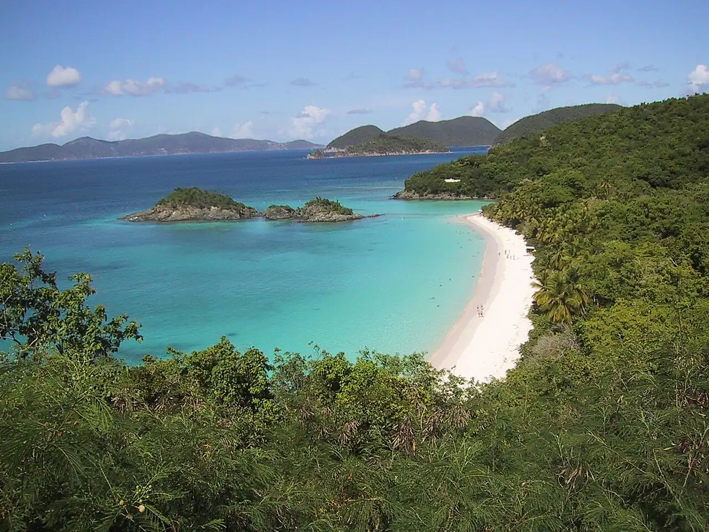

Trunk Bay — Saint John
Saint John, Îles Vierges des États-Unis · snorkeling, baignade

Plage du parc national des Îles Vierges, connue pour son sentier sous-marin balisé autour de l’îlot de Trunk Cay. Le sable blanc et l’eau claire en font l’une des plages les plus photographiées des Caraïbes.
- Lieu
- Saint John, Îles Vierges des États-Unis
- Niveau
- Débutant
- Activités
- snorkeling, baignade
- Type d'eau
- Mer / océan
- Coordonnées
- 18.35, -64.77 (position approximative du secteur)
Dangers à connaître
- Corail fragile et peu profond le long du sentier sous-marin.
- Houle du nord en hiver certains jours.
Le conseil d'Ocean Buddy
L’accès est payant et le site très fréquenté : viens tôt et suis le sentier sous-marin sans toucher le corail.
Ouvrir dans Ocean Buddy Télécharger sur l'App Store
Source : Fiche Ocean Buddy · septembre 2026 · à vérifier localement.